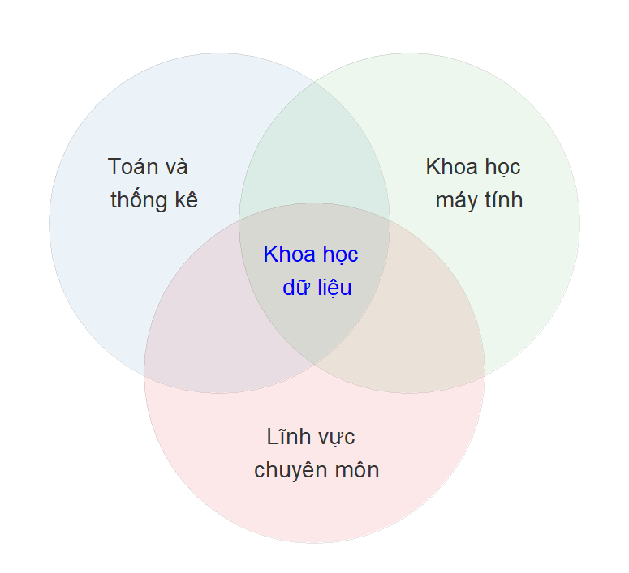
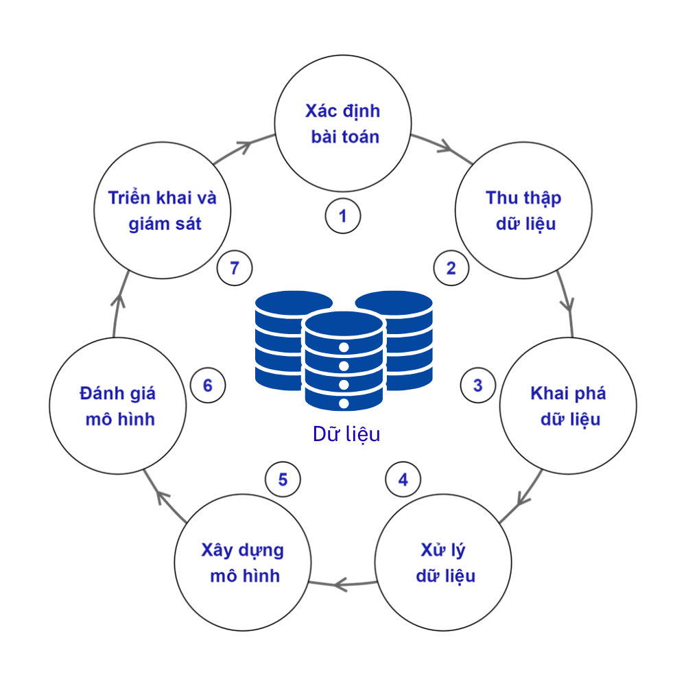

1. Các khái niệm cơ bản trong khoa học dữ liệu#
Chương sách này sẽ giới thiệu một cách hệ thống các khái niệm nền tảng trong khoa học dữ liệu. Nội dung chương bắt đầu từ xác lập định nghĩa dữ liệu trong các bối cảnh khác nhau như dữ liệu định lượng, dữ liệu định tính cho đến dữ liệu có cấu trúc, dữ liệu phi cấu trúc. Tiếp theo, chương trình bày tổng quan về các nền tảng công nghệ đóng vai trò cốt lõi trong việc thu thập, lưu trữ, xử lý và phân tích dữ liệu, bao gồm hệ quản trị cơ sở dữ liệu, công nghệ lưu trữ phân tán, điện toán đám mây và các ngôn ngữ lập trình phổ biến trong lĩnh vực này.
Phần tiếp theo của chương sẽ làm rõ hệ sinh thái nghề nghiệp trong khoa học dữ liệu – một lĩnh vực có tính liên ngành cao và đòi hỏi sự cộng tác của nhiều vai trò chuyên biệt. Các vai trò như nhà phân tích dữ liệu (Data Analyst), kỹ sư dữ liệu (Data Engineer), nhà khoa học dữ liệu (Data Scientist), …, sẽ được giới thiệu và phân biệt rõ ràng về chức năng, kỹ năng cốt lõi cũng như vị trí trong quy trình phân tích dữ liệu toàn diện.
1.1. Giới thiệu chung#
1.1.1. Khái niệm về Khoa học dữ liệu#
Khoa học dữ liệu (Data Science) là một lĩnh vực liên ngành, kết hợp chặt chẽ giữa ba trụ cột chính: toán học và thống kê, khoa học máy tính, và kiến thức chuyên sâu về lĩnh vực ứng dụng (domain knowledge). Sự giao thoa giữa ba thành phần này tạo nên nền tảng lý thuyết và thực tiễn vững chắc để khai thác giá trị từ dữ liệu.
{kind=link}

Fig. 1.1 Khoa học dữ liệu là kết hợp giữa Toán - thống kê, Khoa học máy tính, và Kiến thức chuyên môn#
Trong bối cảnh dữ liệu ngày càng đóng vai trò trung tâm trong việc hỗ trợ ra quyết định, việc khai thác và phân tích dữ liệu một cách có hệ thống trở thành yêu cầu thiết yếu trong nhiều lĩnh vực như kinh tế, kinh doanh, y tế, giáo dục hay quản lý công. Để giải quyết một vấn đề thực tế dựa trên dữ liệu, các nhà phân tích và khoa học dữ liệu thường tuân theo một chu trình gồm các bước nhằm đảm bảo tính nhất quán, logic và hiệu quả trong toàn bộ quá trình — từ việc hiểu rõ mục tiêu ban đầu đến việc triển khai giải pháp và đánh giá kết quả. Chu trình này không chỉ giúp tổ chức dữ liệu một cách có cấu trúc mà còn góp phần biến dữ liệu thô thành thông tin có ý nghĩa phục vụ cho hành động cụ thể.
Một chu trình khai thác dữ liệu để giải quyết vấn đề thực tế thường bao gồm các bước sau:
{kind=link}

Fig. 1.2 Các bước trong một chu trình khai thác dữ liệu để giải quyết các vấn đề trong thực tế.#
Bước 1: Xác định bài toán là giai đoạn đầu tiên trong quy trình khai thác dữ liệu là xác định rõ ràng bài toán cần giải quyết. Việc này bao gồm làm rõ mục tiêu kinh doanh hoặc câu hỏi nghiên cứu cụ thể, hiểu rõ các yêu cầu của tổ chức, khách hàng hoặc người dùng cuối. Đồng thời, cần xác định các chỉ số đo lường thành công và các yêu cầu dữ liệu liên quan. Giai đoạn này đóng vai trò then chốt trong việc định hướng toàn bộ quy trình xử lý và phân tích dữ liệu sau đó.
Bước 2: Thu thập dữ liệu. Sau khi đã xác định rõ mục tiêu, bước tiếp theo là thu thập dữ liệu phù hợp từ các nguồn khác nhau như hệ thống giao dịch, cơ sở dữ liệu nội bộ, giao diện lập trình ứng dụng (API), dữ liệu mở, hoặc thông qua các kỹ thuật thu thập dữ liệu từ web (web scraping). Dữ liệu có thể tồn tại dưới dạng có cấu trúc (structured) hoặc phi cấu trúc (unstructured). Trong quá trình này, cần đặc biệt chú ý đến các quy định pháp lý và đạo đức liên quan đến quyền riêng tư và bảo vệ dữ liệu. Việc tổ chức lưu trữ dữ liệu cũng cần được thực hiện một cách khoa học và an toàn để đảm bảo hiệu quả cho các bước xử lý tiếp theo.
Bước 3: Khai phá dữ liệu là bước nhằm hiểu rõ đặc điểm tổng quát của tập dữ liệu thông qua các phân tích thống kê mô tả và trực quan hóa dữ liệu. Mục tiêu của bước này là xác định các xu hướng, mối tương quan, phân phối dữ liệu, cũng như phát hiện các giá trị ngoại lệ hoặc bất thường. Kết quả thu được sẽ hỗ trợ việc hình thành các giả thuyết hoặc hướng phân tích tiếp theo, từ đó nâng cao chất lượng và tính khả thi của mô hình phân tích hoặc dự báo.
Bước 4: Xử lý dữ liệu. Trước khi xây dựng mô hình, dữ liệu cần được xử lý nhằm đảm bảo chất lượng và tính nhất quán. Các bước xử lý bao gồm làm sạch dữ liệu (xử lý giá trị thiếu, dữ liệu nhiễu, lỗi nhập liệu), biến đổi dữ liệu (chuẩn hóa, mã hóa các biến phân loại, tạo đặc trưng mới) và tích hợp dữ liệu từ nhiều nguồn với định dạng thống nhất. Đây là giai đoạn mang tính kỹ thuật cao, đòi hỏi sự hiểu biết sâu về đặc trưng của dữ liệu và kỹ năng thao tác dữ liệu chuyên sâu.
Bước 5: Xây dựng mô hình. Sau khi dữ liệu đã được xử lý và chuẩn bị, bước tiếp theo là xây dựng các mô hình phân tích hoặc dự đoán. Việc lựa chọn thuật toán học máy (machine learning) phù hợp phụ thuộc vào mục tiêu bài toán (có giám sát hoặc không giám sát), cũng như bản chất của dữ liệu. Dữ liệu thường được chia thành các tập huấn luyện, kiểm tra và kiểm định chéo nhằm đảm bảo tính tổng quát của mô hình. Quá trình huấn luyện đi kèm với việc tinh chỉnh các siêu tham số để tối ưu hóa hiệu suất mô hình.
Bước 6: Đánh giá mô hình. Sau khi mô hình được xây dựng, cần đánh giá hiệu quả của mô hình bằng các chỉ số phù hợp như độ chính xác, độ lỗi trung bình, hệ số xác định,… tùy theo loại bài toán. Ngoài ra, cần so sánh giữa nhiều mô hình khác nhau để chọn ra mô hình có hiệu suất cao và ổn định nhất. Một yếu tố quan trọng không kém là đánh giá mức độ khả giải và ý nghĩa thực tiễn của mô hình để đảm bảo rằng mô hình không chỉ chính xác mà còn có thể được áp dụng hiệu quả trong thực tiễn.
Bước 7: Triển khai và giám sát. Bước cuối cùng là đưa mô hình vào triển khai trong môi trường thực tế như hệ thống phần mềm, ứng dụng web hoặc bảng điều khiển phân tích (dashboard). Sau khi triển khai, cần thiết lập cơ chế giám sát liên tục để theo dõi hiệu suất của mô hình theo thời gian. Trong trường hợp dữ liệu mới xuất hiện hoặc đặc điểm dữ liệu thay đổi, cần cập nhật hoặc tái huấn luyện mô hình để duy trì độ chính xác và tính hiệu quả trong ứng dụng.
Định nghĩa: Như vậy, Khoa học dữ liệu là một lĩnh vực liên ngành, nghiên cứu các tri thức, phương pháp luận và công cụ kỹ thuật nhằm hỗ trợ việc thực hiện một cách toàn diện, có hệ thống và hiệu quả tất cả các bước trong chu trình xử lý, phân tích và khai thác dữ liệu – từ việc xác định vấn đề, thu thập dữ liệu, làm sạch, phân tích, trực quan hóa đến việc diễn giải kết quả và hỗ trợ ra quyết định dựa trên dữ liệu.
Với cách tiếp cận toàn diện và định hướng hệ thống, khoa học dữ liệu không chỉ đơn thuần là một tập hợp các công cụ kỹ thuật, mà còn là một phương pháp luận để khai thác giá trị tiềm ẩn trong dữ liệu nhằm phục vụ các mục tiêu cụ thể.
Do tính ứng dụng rộng khắp, khoa học dữ liệu được triển khai trong nhiều lĩnh vực khác nhau như kinh doanh, y học, vật lý, thiên văn học, quản trị công, và hoạch định chính sách. Chính vì vậy, để đảm bảo tính chính xác và phù hợp trong quá trình phân tích, người thực hiện các dự án khoa học dữ liệu không chỉ cần nắm vững các kỹ thuật phân tích và mô hình hóa, mà còn phải am hiểu kiến thức chuyên ngành liên quan. Việc thiếu hiểu biết về bối cảnh và logic nội tại của lĩnh vực ứng dụng có thể dẫn đến sai lệch trong diễn giải dữ liệu, lựa chọn sai mô hình, hoặc đưa ra kết luận không phù hợp với thực tiễn.
1.1.2. Khoa học dữ liệu trong Kinh tế và Kinh doanh#
Khoa học dữ liệu trong kinh tế và kinh doanh có những đặc thù riêng biệt so với khoa học dữ liệu trong các lĩnh vực như kỹ thuật, y sinh học, hoặc khoa học tự nhiên. Những khác biệt này chủ yếu bắt nguồn từ bản chất của dữ liệu, mục tiêu phân tích, và bối cảnh ra quyết định đặc thù của các tổ chức kinh tế – xã hội.
Thứ nhất, trong các ứng dụng kinh tế và kinh doanh, dữ liệu thường phản ánh hành vi con người trong các hoạt động như tiêu dùng, đầu tư, định giá, hoặc quản trị rủi ro. Khác với các lĩnh vực sử dụng dữ liệu có nguồn gốc vật lý vốn có tính khách quan và ổn định, dữ liệu trong kinh tế – kinh doanh thường chịu ảnh hưởng của kỳ vọng chủ quan, thông tin bất cân xứng, và các yếu tố kinh tế vĩ mô. Điều này đòi hỏi phương pháp tiếp cận phải thận trọng hơn trong việc giải thích, đánh giá độ tin cậy và kiểm soát sai lệch trong dữ liệu.
Thứ hai, các mô hình phân tích trong lĩnh vực kinh tế – kinh doanh không chỉ hướng đến độ chính xác trong dự đoán mà còn cần đảm bảo khả năng giải thích và minh bạch về mặt kinh tế học hoặc quản trị. Khác với một số lĩnh vực cho phép sử dụng các mô hình hộp đen (black box), trong bối cảnh kinh doanh, các nhà quản lý và chuyên gia ra quyết định yêu cầu hiểu rõ các yếu tố ảnh hưởng và mối quan hệ nhân quả giữa biến đầu vào và kết quả đầu ra. Do đó, khoa học dữ liệu trong lĩnh vực này thường kết hợp với lý thuyết kinh tế, tài chính và quản trị để đảm bảo mô hình có giá trị thực tiễn và được chấp nhận trong môi trường ứng dụng.
Thứ ba, mục tiêu tối hậu của khoa học dữ liệu trong kinh tế và kinh doanh thường gắn liền với tối ưu hóa hiệu quả kinh tế, nâng cao năng suất vận hành, tối thiểu hóa rủi ro, hoặc hỗ trợ xây dựng chiến lược dài hạn. Điều này khiến khoa học dữ liệu trong lĩnh vực này có xu hướng tích hợp với các mô hình định lượng truyền thống như mô hình kinh tế lượng, phân tích rủi ro tài chính, mô phỏng hành vi thị trường, và các công cụ hỗ trợ ra quyết định dựa trên dữ liệu.
Từ những đặc thù nêu trên, có thể thấy rằng quy trình triển khai một dự án khoa học dữ liệu trong lĩnh vực kinh tế và kinh doanh tuy vẫn tuân theo các bước chuẩn của khoa học dữ liệu nói chung, nhưng lại có những điểm điều chỉnh và thích nghi nhất định, phản ánh rõ tính liên ngành và định hướng ứng dụng đặc trưng của lĩnh vực này.
Các bước |
Khoa học dữ liệu thông thường |
Khoa học dữ liệu trong Kinh tế & Kinh doanh |
|---|---|---|
1. Xác định bài toán |
Bài toán thường mang tính kỹ thuật như nhận diện khuôn mặt, xử lý âm thanh, tối ưu hóa hệ thống kỹ thuật… Tập trung vào độ chính xác của hệ thống. |
Bài toán gắn liền với các hoạt động kinh doanh và ra quyết định như dự báo doanh thu, phân loại khách hàng, xác định nguyên nhân doanh số giảm… Đòi hỏi hiểu biết sâu về môi trường kinh doanh và mục tiêu chiến lược. |
2. Thu thập dữ liệu |
Dữ liệu đến từ cảm biến, hình ảnh, âm thanh, nhật ký hệ thống, tín hiệu từ thiết bị. Có thể phức tạp và cần xử lý chuyên biệt. |
Dữ liệu thường ở dạng bảng biểu như danh sách khách hàng, hóa đơn bán hàng, số liệu tài chính, khảo sát thị trường… Gắn với hệ thống quản lý doanh nghiệp. Yêu cầu hiểu đúng ý nghĩa các cột và đơn vị đo. |
3. Khai phá dữ liệu |
Phân tích nhằm hiểu cấu trúc kỹ thuật của dữ liệu như độ phân giải ảnh, dạng sóng âm, hoặc tín hiệu. Sử dụng nhiều công cụ đặc thù. |
Sử dụng thống kê cơ bản để tìm ra xu hướng, mùa vụ, mối quan hệ giữa các chỉ tiêu kinh doanh (như doanh thu theo khu vực, biến động chi phí theo thời gian). Phù hợp với cách nhà quản lý suy nghĩ và ra quyết định. |
4. Xử lý dữ liệu |
Thường là các kỹ thuật xử lý hình ảnh, loại bỏ nhiễu trong tín hiệu, cắt ghép âm thanh hoặc chuẩn hóa dữ liệu đầu vào cho máy học. |
Gồm việc kiểm tra và làm sạch dữ liệu bị thiếu, sai sót nhập liệu, quy đổi đơn vị đo lường, phân nhóm khách hàng, chuẩn hóa thông tin từ nhiều nguồn để đưa về định dạng dễ phân tích. |
5. Xây dựng mô hình |
Sử dụng các kỹ thuật phức tạp như mạng học sâu, yêu cầu máy tính mạnh. Tập trung tối ưu hóa độ chính xác và khả năng học tự động. |
Sử dụng các mô hình đơn giản, dễ hiểu, dễ giải thích như hồi quy tuyến tính, cây quyết định… Quan trọng là mô hình có thể được nhà quản lý hiểu và tin dùng để áp dụng vào thực tế. |
6. Đánh giá mô hình |
Dựa vào các chỉ số kỹ thuật như độ chính xác, tỉ lệ nhận diện đúng, hoặc các chỉ số riêng biệt cho từng loại dữ liệu. |
Ngoài đánh giá độ chính xác, còn phải xem mô hình có giúp cải thiện hiệu quả kinh doanh không, như tăng doanh thu, giảm chi phí, nâng cao chất lượng phục vụ. Phải đánh giá cả ý nghĩa thực tế. |
7. Triển khai & giám sát |
Mô hình có thể được nhúng vào thiết bị điện tử, hệ thống điều khiển, ứng dụng công nghệ cao hoặc tự động hóa. |
Mô hình thường được tích hợp vào hệ thống báo cáo, bảng điều khiển dành cho lãnh đạo, hoặc các phần mềm hỗ trợ ra quyết định. Cần giám sát liên tục để cập nhật khi thị trường hoặc hành vi khách hàng thay đổi. |
1.1.3. Các lĩnh vực chuyên sâu trong Khoa học dữ liệu hiện đại#
Khoa học dữ liệu là một lĩnh vực liên ngành có phạm vi ứng dụng rộng lớn, đòi hỏi sự kết hợp hài hòa giữa kiến thức về Toán & thống kê, khoa học máy tính và hiểu biết một chuyên môn lĩnh vực. Để triển khai hiệu quả các dự án khoa học dữ liệu trong thực tiễn, người làm việc trong lĩnh vực này thường chuyên sâu vào những nhánh kỹ thuật cụ thể, đảm nhiệm các vai trò khác nhau trong chu trình dữ liệu tổng thể.
Ba lĩnh vực chuyên sâu tiêu biểu và có tính nền tảng có liên quan mật thiết đến Khoa học dữ liệu hiện nay bao gồm: Kỹ thuật dữ liệu (Data Engineering), Phân tích dữ liệu (Data Analytics), và Học máy (Machine Learning). Mỗi lĩnh vực đảm nhận một vai trò riêng biệt trong chu trình xử lý và khai thác dữ liệu – từ thu thập và tổ chức dữ liệu, khám phá thông tin, cho đến xây dựng mô hình dự đoán và ra quyết định. Việc phân biệt rõ các lĩnh vực chuyên môn này không chỉ giúp phân công lao động hiệu quả trong các nhóm dữ liệu, mà còn hỗ trợ người học và người làm nghề định hướng phát triển chuyên môn phù hợp với thế mạnh và nhu cầu của mình.
1.1.3.1. Kỹ thuật dữ liệu (Data Engineering)#
Kỹ thuật dữ liệu là một lĩnh vực chuyên sâu độc lập nhưng có liên hệ chặt chẽ với Khoa học dữ liệu. Kỹ thuật dữ liệu tập trung vào việc thiết kế, xây dựng, quản trị và duy trì hạ tầng dữ liệu nhằm phục vụ cho các hoạt động phân tích, mô hình hóa và ra quyết định dựa trên dữ liệu. Với vai trò là lớp nền kỹ thuật, kỹ thuật dữ liệu bảo đảm cho toàn bộ chu trình khoa học dữ liệu vận hành một cách hiệu quả và nhất quán – từ khâu thu nhận dữ liệu ban đầu cho đến khi dữ liệu được xử lý và phân phối tới các nhà phân tích hoặc hệ thống mô hình hóa.
Chuyên gia kỹ thuật dữ liệu (data engineer) là những người chịu trách nhiệm thiết lập và quản lý các hệ thống lưu trữ dữ liệu có quy mô lớn như kho dữ liệu hoặc hồ dữ liệu (data lake), xây dựng các quy trình xử lý dữ liệu tự động (data pipeline), đồng thời bảo đảm chất lượng, tính nhất quán, và khả năng truy cập dữ liệu trong điều kiện vận hành thực tế.
Về mặt chức năng, lĩnh vực kỹ thuật dữ liệu có mối liên hệ mật thiết với một số bước cụ thể trong chu trình khoa học dữ liệu như sau:
Bước 2 – Thu thập dữ liệu: Đây là giai đoạn mà kỹ thuật dữ liệu đóng vai trò trung tâm. Các kỹ sư dữ liệu đảm nhận việc kết nối với nhiều nguồn dữ liệu khác nhau như hệ thống giao dịch, cơ sở dữ liệu quan hệ, giao diện lập trình ứng dụng (API), dữ liệu web, hoặc thiết bị IoT. Trên cơ sở đó, họ xây dựng các quy trình tự động hóa nhằm thu thập, hợp nhất và lưu trữ dữ liệu một cách liên tục, có tổ chức và sẵn sàng cho phân tích.
Bước 3 – Khai phá dữ liệu (vai trò hỗ trợ): Mặc dù không trực tiếp thực hiện các phân tích thống kê hoặc mô tả dữ liệu, kỹ sư dữ liệu có nhiệm vụ xây dựng các công cụ truy vấn, kho dữ liệu dạng phân tích, hoặc giao diện khai thác dữ liệu giúp các nhà phân tích truy cập và khám phá dữ liệu một cách hiệu quả, nhanh chóng và nhất quán.
Bước 4 – Xử lý dữ liệu: đây là cũng là một đóng góp quan trọng của kỹ thuật dữ liệu. Các kỹ sư đảm nhiệm việc làm sạch dữ liệu, chuẩn hóa định dạng, tích hợp dữ liệu từ nhiều nguồn, và chuyển đổi dữ liệu sang các cấu trúc phù hợp với nhu cầu phân tích. Các quy trình như ETL (Extract – Transform – Load) hoặc ELT (Extract – Load – Transform) được triển khai để xử lý dữ liệu theo cách có hệ thống, đảm bảo tính chính xác và hiệu quả trong sử dụng.
Bước 7 – Triển khai và giám sát (vai trò hỗ trợ): Trong giai đoạn vận hành mô hình, kỹ thuật dữ liệu đóng vai trò đảm bảo dòng dữ liệu ổn định, xây dựng hệ thống giám sát luồng dữ liệu theo thời gian thực, và hỗ trợ các cơ chế cập nhật mô hình dựa trên dữ liệu mới.
Với vai trò đặt nền móng cho toàn bộ hạ tầng dữ liệu, kỹ thuật dữ liệu không chỉ là một thành phần không thể thiếu trong các dự án khoa học dữ liệu, mà còn là yếu tố quyết định đến khả năng mở rộng, tốc độ xử lý, và độ tin cậy của toàn bộ hệ thống phân tích.
Các vấn đề cốt lõi của lĩnh vực kỹ thuật dữ liệu sẽ được trình bày trong phần cuối của chương.
1.1.3.2. Phân tích dữ liệu (Data Analytics)#
Phân tích dữ liệu là một lĩnh vực chuyên sâu trong khoa học dữ liệu, tập trung vào việc khám phá, hiểu và diễn giải các mô hình, mối quan hệ và xu hướng tiềm ẩn trong dữ liệu nhằm phục vụ cho việc ra quyết định. Mục tiêu cốt lõi của phân tích dữ liệu là phát hiện và khai thác giá trị tiềm ẩn trong dữ liệu, hiểu rõ mối quan hệ giữa các biến và đưa ra các kết luận có ý nghĩa nhằm định hướng hành động trong tương lai. Thông qua quá trình phân tích, tổ chức có thể đánh giá hiệu quả trong quá khứ, phát hiện các vấn đề tiềm ẩn, kiểm định giả thuyết và đưa ra lựa chọn chiến lược dựa trên bằng chứng dữ liệu.
Trong thực tiễn, phân tích dữ liệu thường được phân loại thành bốn hình thức chính, tương ứng với các cấp độ ngày càng cao của giá trị phân tích:
Phân tích mô tả (descriptive analytics): Tóm lược và trình bày thông tin từ dữ liệu quá khứ để phản ánh những gì đã xảy ra. Đây là bước nền tảng, giúp hình thành cái nhìn tổng quát về hiện trạng hoặc hiệu suất hoạt động.
Phân tích chẩn đoán (diagnostic analytics): Tìm hiểu nguyên nhân của các hiện tượng được phát hiện thông qua phân tích mô tả. Hình thức này sử dụng các kỹ thuật so sánh, truy vết và phân nhóm để lý giải vì sao một sự kiện xảy ra.
Phân tích dự đoán (predictive analytics): Dựa trên dữ liệu lịch sử và các mô hình thống kê để ước lượng xác suất xảy ra của các sự kiện trong tương lai. Mặc dù sử dụng mô hình, nhưng trọng tâm vẫn là hỗ trợ hiểu xu hướng, thay vì xây dựng mô hình tự động như trong học máy.
Phân tích đề xuất (prescriptive analytics): Gợi ý các hành động tối ưu dựa trên việc đánh giá nhiều kịch bản khả dĩ và hậu quả tương ứng. Phân tích dạng này thường hỗ trợ các hệ thống ra quyết định hoặc khuyến nghị thông minh trong môi trường kinh doanh.
Phân tích dữ liệu, mặc dù là một thành phần quan trọng trong khoa học dữ liệu, vẫn có một chu trình thực hiện với mục tiêu cụ thể và phạm vi hẹp hơn. Khác với khoa học dữ liệu – vốn bao gồm các hoạt động phức tạp như tự động hóa thu thập dữ liệu, xử lý dữ liệu lớn, xây dựng hạ tầng lưu trữ và triển khai mô hình học máy – phân tích dữ liệu thường được triển khai trên các tập dữ liệu có cấu trúc đơn giản hơn, với mục đích chính là hiểu và khai thác thông tin từ dữ liệu hiện có để phục vụ phân tích định tính hoặc định lượng.
Phân tích dữ liệu không bao gồm các hoạt động như:
tự động hóa quy trình thu thập và tích hợp dữ liệu từ nhiều nguồn,
xử lý và lưu trữ dữ liệu ở quy mô lớn,
thiết kế và tối ưu hóa cơ sở dữ liệu hoặc hạ tầng tính toán,
phát triển hoặc huấn luyện các mô hình học máy có tính chất phức tạp,
hay xây dựng hệ thống tự động ra quyết định trong thời gian thực.
Thay vào đó, quy trình phân tích dữ liệu tập trung vào một chuỗi các bước có hệ thống, thường bao gồm:
Xác định vấn đề và mục tiêu phân tích: làm rõ câu hỏi nghiên cứu hoặc yêu cầu nghiệp vụ cần giải quyết dựa trên dữ liệu. Việc xác định đúng mục tiêu giúp định hướng toàn bộ quá trình phân tích và lựa chọn phương pháp phù hợp.
Thu thập, tổ chức và làm sạch dữ liệu: tập hợp dữ liệu từ các nguồn liên quan, chuẩn hóa định dạng, xử lý giá trị thiếu, loại bỏ sai lệch và tổ chức lại dữ liệu theo cấu trúc phù hợp với mục tiêu phân tích.
Thực hiện phân tích dữ liệu: áp dụng các phương pháp thống kê mô tả, trực quan hóa và kỹ thuật phân tích khám phá để xác định các xu hướng, mẫu hình và mối liên hệ giữa các biến trong dữ liệu.
Diễn giải, đánh giá và truyền đạt kết quả: đặt kết quả phân tích trong bối cảnh nghiệp vụ hoặc nghiên cứu cụ thể để đưa ra các nhận định có căn cứ. Trình bày kết quả một cách trực quan và hiệu quả thông qua báo cáo, biểu đồ, bảng điều khiển (dashboard), hoặc công cụ tương tác nhằm hỗ trợ ra quyết định.
Phân tích dữ liệu là một thành phần xuyên suốt trong chu trình khoa học dữ liệu. Mặc dù không đảm nhiệm vai trò kỹ thuật cốt lõi như xây dựng hạ tầng hay phát triển mô hình học máy phức tạp, phân tích dữ liệu đóng vai trò trung tâm trong các bước khám phá dữ liệu và xử lý dữ liệu, đồng thời giữ vai trò hỗ trợ quan trọng ở các bước còn lại nhằm bảo đảm tính nhất quán và định hướng phân tích trong toàn bộ quy trình.
Bước 1 – Xác định bài toán: phân tích dữ liệu góp phần làm rõ mục tiêu phân tích hoặc yêu cầu nghiệp vụ thông qua việc thực hiện các phân tích sơ bộ, thống kê mô tả hoặc đánh giá nhanh dữ liệu hiện có, từ đó giúp xác định phạm vi và phương pháp tiếp cận phù hợp.
Bước 2 – Thu thập dữ liệu: không trực tiếp thực hiện thu thập, các nhà phân tích dữ liệu có thể tư vấn về lựa chọn biến số phù hợp, xác định nguồn dữ liệu cần thiết và đánh giá sơ bộ mức độ đầy đủ và độ tin cậy của dữ liệu được thu thập.
Bước 3 – Khai phá dữ liệu là bước mà phân tích dữ liệu phát huy vai trò cốt lõi. Thông qua các kỹ thuật thống kê mô tả, phân tích trực quan, kiểm định giả thuyết và đo lường mối tương quan, nhà phân tích khám phá cấu trúc, xu hướng và các đặc điểm nổi bật trong dữ liệu – nền tảng cho việc hình thành giả thuyết phân tích sâu hơn.
Bước 4 – Xử lý dữ liệu cũng là bước mà phân tích dữ liệu đóng vai trò quan trọng trong việc đánh giá chất lượng dữ liệu, phát hiện bất thường, xác định biến không phù hợp và đề xuất phương án xử lý như loại bỏ giá trị ngoại lệ, gộp nhóm biến, hoặc chuẩn hóa dữ liệu. Tuy nhiên, các thao tác kỹ thuật phức tạp thường do kỹ sư dữ liệu thực hiện.
Bước 5 – Xây dựng mô hình: Phân tích dữ liệu có thể trực tiếp tham gia và đóng vai trò then chốt trong trường hợp sử dụng các mô hình thống kê đơn giản như hồi quy tuyến tính, phân tích phương sai hoặc phân cụm. Đối với các mô hình phức tạp hơn đòi hỏi tối ưu hóa và huấn luyện tự động, vai trò chính thuộc về lĩnh vực xây dựng mô hình học máy.
Bước 6 – Đánh giá mô hình: Phân tích dữ liệu có vai trò hỗ trợ trong việc đánh giá hiệu suất mô hình bằng các chỉ số thống kê phù hợp, so sánh giữa các phương án và diễn giải kết quả dưới góc nhìn nghiệp vụ, giúp đảm bảo tính khả thi và giá trị ứng dụng thực tiễn của mô hình.
Bước 7 – Triển khai và giám sát: Phân tích dữ liệu hỗ trợ truyền đạt kết quả một cách trực quan và dễ hiểu thông qua báo cáo, biểu đồ, dashboard hoặc các công cụ trình bày tương tác. Ngoài ra, phân tích dữ liệu cũng có thể tham gia giám sát hiệu quả mô hình trong thực tiễn, phát hiện dấu hiệu suy giảm hiệu suất và đề xuất cải tiến.
Các bước cụ thể trong quy trình phân tích dữ liệu sẽ được trình bày trong Chương 3 của cuốn sách.
1.1.3.3. Mô hình học máy (Machine Learning)#
Học máy là một lĩnh vực chuyên sâu trong khoa học dữ liệu, nghiên cứu các thuật toán và mô hình cho phép máy tính học từ dữ liệu và đưa ra dự đoán hoặc quyết định mà không cần lập trình một cách tường minh. Trọng tâm của học máy là khai thác mối quan hệ ẩn giữa các biến trong dữ liệu để xây dựng các mô hình có khả năng tổng quát hóa – tức đưa ra dự đoán chính xác đối với dữ liệu chưa từng thấy trước đó.
Khác với phân tích dữ liệu – vốn chủ yếu tập trung vào khám phá, mô tả và diễn giải dữ liệu hiện có – học máy hướng đến tự động hóa quá trình học từ dữ liệu và ra quyết định trên quy mô lớn, với độ chính xác được tối ưu thông qua các thuật toán huấn luyện lặp đi lặp lại. Đây là nền tảng kỹ thuật chính cho nhiều ứng dụng hiện đại như nhận diện hình ảnh, phân loại văn bản, phát hiện gian lận, đề xuất sản phẩm, dự báo nhu cầu, và hệ thống ra quyết định thông minh.
Trong thực tiễn, học máy được chia thành ba nhóm chính:
Học có giám sát (Supervised Learning): Mô hình được huấn luyện trên một tập dữ liệu đã gán nhãn (labelled data) với mục tiêu dự đoán đầu ra từ dữ liệu đầu vào. Các bài toán tiêu biểu gồm dự đoán giá (hồi quy), phân loại email (phân loại), v.v.
Học không giám sát (Unsupervised Learning): Mô hình khám phá cấu trúc ẩn trong dữ liệu chưa gán nhãn, ví dụ như phân nhóm khách hàng (clustering), giảm chiều dữ liệu (dimensionality reduction), v.v.
Học tăng cường (Reinforcement Learning): Mô hình học thông qua tương tác với môi trường bằng cách tối ưu hóa phần thưởng, được ứng dụng trong robot học, trò chơi, và tối ưu chiến lược ra quyết định.
Học máy có vai trò nổi bật trong các bước từ xây dựng mô hình đến triển khai, giám sát và cải tiến mô hình. Tuy nhiên, để đảm bảo hiệu quả và độ chính xác của mô hình, nó cũng đòi hỏi đầu vào chất lượng từ các bước tiền xử lý dữ liệu và phân tích ban đầu.
Bước 1 – Xác định bài toán: học máy hỗ trợ chuyển hóa vấn đề thực tiễn thành bài toán định lượng và xác định đúng dữ liệu cần thu thập.
Bước 3 – Khai phá dữ liệu: mặc dù không trực tiếp tham gia vào bước này, nhưng mô hình học máy có thể sử dụng để khám phá các biến quan trọng hoặc xác định các mối liên hệ của các biến trong dữ liệu.
Bước 4 – Xử lý dữ liệu: mô hình học máy có thể sử dụng để xử lý các vấn đề như điền giá trị không quan sát được, thay thế giá trị ngoại lai.
Bước 5 – Xây dựng mô hình là trung tâm của học máy. Các thuật toán được lựa chọn, huấn luyện trên dữ liệu, đánh giá bằng tập kiểm tra, và hiệu chỉnh. Nhiều phương pháp như hồi quy logistic, cây quyết định, random forest, SVM, neural networks… được áp dụng tùy vào bài toán và yêu cầu.
Bước 6 – Đánh giá mô hình: Học máy cung cấp nhiều công cụ đánh giá hiệu suất của mô hình. Việc đánh giá chặt chẽ giúp chọn mô hình tốt nhất và tránh hiện tượng lựa chọn sai mô hình (bias) hoặc khớp quá mức với dữ liệu.
Bước 7 – Triển khai và giám sát mô hình học máy sau khi được triển khai cần được giám sát hiệu suất định kỳ, cập nhật theo dữ liệu mới và đánh giá tính ổn định. Các hệ thống ML Ops ngày nay tích hợp cả học máy và quy trình vận hành nhằm đảm bảo mô hình luôn đạt hiệu quả trong thực tế.
Các phương pháp luận trong xây dựng và đánh giá mô hình học máy sẽ được thảo luận trong Chương 3 của cuốn sách.
Trước khi đi sâu vào phân tích lĩnh vực Kỹ thuật dữ liệu, trong phần tiếp theo chúng ta sẽ làm rõ khái niệm dữ liệu và các vấn đề cơ bản có liên quan nhằm cung cấp một nền tảng khái quát, giúp bạn đọc hiểu đầy đủ bối cảnh và vai trò của kỹ thuật dữ liệu trong một chu trình khoa học dữ liệu đầy đủ.
1.2. Dữ liệu là gì ?#
Dữ liệu là thông tin chưa được xử lý, tồn tại ở dạng thô và cần được tổ chức lại để trở nên có ý nghĩa. Nói cách khác, dữ liệu là tập hợp của các sự kiện, quan sát, nhận thức, con số, ký tự, biểu tượng hoặc hình ảnh, tất cả đều có thể được giải thích để rút ra thông tin.
1.2.1. Phân loại dữ liệu#
Một trong những cách phổ biến để phân loại dữ liệu là dựa trên cấu trúc. Theo tiêu chí này, dữ liệu được chia thành ba loại chính: dữ liệu có cấu trúc (structured), dữ liệu kiểu bán cấu trúc (semi-structured), dữ liệu phi cấu trúc (unstructured).
Dữ liệu có cấu trúc là loại dữ liệu có định dạng rõ ràng, tuân theo một mô hình dữ liệu được xác định trước và thường được lưu trữ trong các hệ quản trị cơ sở dữ liệu dạng quan hệ (relational databases). Dữ liệu này có thể được biểu diễn dưới dạng bảng với các hàng và cột, cho phép xử lý bằng các công cụ và kỹ thuật phân tích dữ liệu truyền thống.
Các nguồn phổ biến lưu trữ và cung cấp dữ liệu có cấu trúc bao gồm:
Cơ sở dữ liệu quan hệ (SQL Databases)
Bảng tính điện tử như Excel hoặc Google Sheets
Dữ liệu bán cấu trúc là loại dữ liệu có một số đặc điểm tổ chức, nhưng không tuân theo một lược đồ dữ liệu cố định như dữ liệu có cấu trúc. Dữ liệu bán cấu trúc không thể biểu diễn một cách chặt chẽ bằng hàng và cột trong cơ sở dữ liệu. Thay vào đó, nó chứa các thẻ hoặc thuộc tính dùng để nhóm thông tin và sắp xếp theo cấu trúc phân cấp.
Một số nguồn dữ liệu bán cấu trúc điển hình:
Email
Tài liệu XML hoặc các ngôn ngữ đánh dấu khác
Các định dạng như XML và JSON là phương tiện phổ biến để lưu trữ và trao đổi dữ liệu bán cấu trúc nhờ khả năng định nghĩa các thẻ và thuộc tính theo yêu cầu người dùng.
Dữ liệu phi cấu trúc là loại dữ liệu không có định dạng cụ thể hoặc không tuân theo bất kỳ quy tắc cú pháp nào rõ ràng. Do đó, loại dữ liệu này không thể lưu trữ hiệu quả trong cơ sở dữ liệu quan hệ truyền thống. Tuy nhiên, dữ liệu phi cấu trúc lại phong phú về mặt nội dung và có ứng dụng rộng rãi trong các bài toán phân tích và trí tuệ kinh doanh hiện đại.
Các nguồn dữ liệu phi cấu trúc thường gặp bao gồm:
Trang web
Dữ liệu từ mạng xã hội
Hình ảnh (JPEG, PNG, GIF,…)
Tệp âm thanh, video
Văn bản (PDF, Word, PowerPoint)
Loại dữ liệu này thường được lưu trữ dưới dạng tệp văn bản, tài liệu, hoặc trong các cơ sở dữ liệu NoSQL – nơi cung cấp công cụ phân tích phù hợp với tính chất không có cấu trúc của dữ liệu.
1.2.2. Định dạng tệp chứa dữ liệu#
Trong môi trường làm việc với dữ liệu, việc nắm bắt các định dạng tệp và cấu trúc dữ liệu là yếu tố thiết yếu nhằm bảo đảm hiệu quả trong lưu trữ, truy xuất và phân tích thông tin. Các định dạng tệp phổ biến được sử dụng bao gồm: tệp dữ liệu văn bản phân tách (delimited text), bảng tính Microsoft Excel, ngôn ngữ đánh dấu mở rộng (XML), định dạng tài liệu di động (PDF), và JavaScript Object Notation (JSON).
Tệp văn bản phân tách lưu trữ dữ liệu dưới dạng văn bản thuần, trong đó mỗi dòng đại diện cho một bản ghi, và các giá trị trong dòng được phân tách bởi một ký tự đặc biệt gọi là dấu phân tách. Các dấu phân tách phổ biến bao gồm dấu phẩy (,), tab, dấu hai chấm (:), thanh dọc (|), và dấu cách (space). Các định dạng tệp CSV (Comma-Separated Values) và TSV (Tab-Separated Values) là những ví dụ điển hình. Tệp CSV sử dụng dấu phẩy làm dấu phân tách, trong khi TSV sử dụng ký tự tab. Tệp phân tách thường có dòng đầu tiên là tiêu đề của các cột và có thể xử lý dễ dàng bằng nhiều phần mềm phân tích dữ liệu.
Bảng tính Microsoft Excel là định dạng bảng tính được phát triển bởi Microsoft. Tệp dữ liệu thường gồm nhiều trang tính (worksheet), mỗi trang có cấu trúc hàng (row) và cột (column), trong đó ô dữ liệu (cell) là đơn vị cơ bản. Bảng tính hỗ trợ nhiều chức năng tính toán, định dạng và bảo mật dữ liệu, đồng thời có khả năng tương thích cao với các phần mềm phân tích khác.
Ngôn ngữ đánh dấu mở rộng XML là một ngôn ngữ đánh dấu có thể đọc được bởi cả con người và máy tính, XML cho phép mô tả dữ liệu theo cấu trúc phân cấp. XML không sử dụng các thẻ (tag) được định nghĩa trước mà cho phép người dùng tự định nghĩa. XML được sử dụng rộng rãi trong truyền tải dữ liệu qua Internet và có tính độc lập cao với nền tảng phần cứng hoặc ngôn ngữ lập trình.
Định dạng tài liệu di động được phát triển bởi Adobe, còn được gọi là các file .pdf, là định dạng tiêu chuẩn để trình bày văn bản và hình ảnh một cách thống nhất, bất kể phần mềm, phần cứng hay hệ điều hành sử dụng. PDF thường được dùng trong các tài liệu pháp lý, tài chính và biểu mẫu cần điền thông tin.
JavaScript Object Notation, hay JSON, là định dạng văn bản nhẹ và dễ hiểu, được thiết kế để truyền tải dữ liệu có cấu trúc qua web. JSON hỗ trợ lưu trữ dữ liệu dạng cặp khóa-giá trị và có tính tương thích cao với hầu hết các ngôn ngữ lập trình, đặc biệt phổ biến trong các giao diện lập trình ứng dụng và dịch vụ web.
1.2.3. Nguồn dữ liệu#
Dữ liệu ngày nay được sinh ra từ nhiều nguồn đa dạng và liên tục. Có thể phân loại các nguồn dữ liệu phổ biến như sau:
Cơ sở dữ liệu quan hệ (relational databases) là nguồn dữ liệu có cấu trúc được lưu trữ trong các hệ quản trị cơ sở dữ liệu như SQL Server, Oracle, MySQL và IBM DB2. Dữ liệu này có thể khai thác để phân tích giao dịch bán lẻ, quản trị quan hệ khách hàng, hay dự báo doanh số.
Tệp văn bản phẳng, bảng tính và XML lưu trữ dữ liệu dưới dạng dòng văn bản, trong đó mỗi dòng là một bản ghi với các giá trị phân tách bằng dấu đặc biệt. Bảng tính như Excel hoặc Google Sheets cung cấp khả năng lưu trữ dữ liệu dạng bảng, có thể kèm theo định dạng và công thức. XML hỗ trợ cấu trúc dữ liệu phức tạp và thường dùng trong khảo sát, sao kê ngân hàng và dữ liệu phi cấu trúc.
API (Application Programming Interface) và dịch vụ Web là các cổng kết nối cho phép người dùng hoặc ứng dụng truy cập dữ liệu từ hệ thống khác. Ví dụ: API của Twitter hoặc Facebook để phân tích cảm xúc từ bài đăng; API thị trường chứng khoán để truy xuất dữ liệu giá, EPS, và lịch sử giao dịch.
Web Scraping là phương pháp trích xuất dữ liệu từ các trang web không có API công khai. Các công cụ phổ biến gồm Scrapy, và Selenium. Web scraping được dùng trong so sánh giá, thu thập dữ liệu khách hàng, hoặc tạo tập dữ liệu huấn luyện cho mô hình học máy.
Dữ liệu từ các nguồn cấp khác: được truyền liên tục từ các thiết bị IoT, hệ thống GPS, cảm biến, camera an ninh, và mạng xã hội. Ứng dụng trong phân tích thời gian thực như giao dịch tài chính, giám sát an ninh, và quản lý chuỗi cung ứng. Các nền tảng như Apache Kafka, Spark Streaming và Storm thường được dùng để xử lý dạng dữ liệu này.
1.2.4. Ngôn ngữ máy tính phổ biến trong Khoa học dữ liệu#
Ngôn ngữ lập trình và truy vấn dữ liệu đóng vai trò trung tâm trong hoạt động phân tích và xử lý dữ liệu. Ba loại ngôn ngữ phổ biến bao gồm:
Ngôn ngữ truy vấn, chẳng hạn như SQL (structured query language), là ngôn ngữ tiêu chuẩn để truy xuất và thao tác với dữ liệu trong cơ sở dữ liệu quan hệ. SQL cho phép thực hiện các thao tác như tạo bảng, chèn, cập nhật và truy vấn dữ liệu với cú pháp gần gũi ngôn ngữ tự nhiên.
Ngôn ngữ lập trình:
Python: Là ngôn ngữ lập trình thông dụng, mã nguồn mở, cú pháp đơn giản, dễ học. Python sở hữu hệ sinh thái thư viện phong phú như NumPy, Pandas, Matplotlib, Seaborn, Scikit-learn cho khoa học dữ liệu và học máy.
R: Là ngôn ngữ chuyên biệt cho thống kê và trực quan hóa dữ liệu, với các thư viện như ggplot2, dplyr, và Shiny hỗ trợ xây dựng ứng dụng phân tích tương tác.
Ngôn ngữ shell và script:
Unix/Linux Shell: Cho phép tự động hóa các tác vụ lặp lại như sao lưu, xử lý tệp và giám sát hệ thống.
PowerShell: Được Microsoft phát triển, hỗ trợ làm việc với dữ liệu có cấu trúc như JSON, XML, REST API và có thể dùng để tạo dashboard, báo cáo và GUI tương tác.
Như vậy, việc lựa chọn và sử dụng thành thạo một số ngôn ngữ trong ba nhóm trên là yêu cầu thiết yếu đối với bất kỳ chuyên gia dữ liệu nào nhằm phục vụ hiệu quả cho quá trình khai thác, xử lý và phân tích dữ liệu trong môi trường thực tiễn.
1.3. Kỹ thuật dữ liệu và Khoa học dữ liệu#
1.3.1. Khái niệm Kỹ thuật dữ liệu#
Như đã trình bày ở phần trước, Kỹ thuật dữ liệu và Khoa học dữ liệu là hai lĩnh vực có mối liên hệ mật thiết song tồn tại một cách độc lập về mặt chức năng và chuyên môn. Trong khi khoa học dữ liệu tập trung vào các hoạt động phân tích, xây dựng mô hình dự báo và ứng dụng trí tuệ nhân tạo nhằm khai thác tri thức từ dữ liệu, thì kỹ thuật dữ liệu đảm nhận vai trò thiết kế, triển khai và duy trì hạ tầng dữ liệu – bao gồm thu thập, xử lý, lưu trữ và cung cấp dữ liệu đầu vào – phục vụ cho toàn bộ quy trình phân tích.
Mặc dù khoa học dữ liệu thường được gắn với các bước phân tích khai phá dữ liệu và xây dựng mô hình học máy, nhưng các bước tiền xử lý như thu thập, lưu trữ và xử lý dữ liệu lại đóng vai trò nền tảng không thể thiếu để đảm bảo chất lượng và tính khả thi của các phân tích ở tầng cao. Thực tiễn cho thấy, một tỷ lệ lớn thời gian trong các dự án khoa học dữ liệu (ước tính khoảng 70–80%) thường được dành cho các hoạt động như thu thập, chuẩn hóa, làm sạch và tổ chức dữ liệu. Các công việc này, về mặt chuyên môn, thuộc phạm vi và thế mạnh của lĩnh vực kỹ thuật dữ liệu.
Mặc dù thuật ngữ “kỹ thuật dữ liệu” có thể được định nghĩa theo nhiều cách khác nhau, nhưng các cách tiếp cận phổ biến đều thống nhất rằng: kỹ thuật dữ liệu là quá trình thiết kế, triển khai và duy trì các hệ thống và quy trình nhằm thu nhận, xử lý, lưu trữ và cung cấp dữ liệu chất lượng cao để phục vụ cho các mục đích phân tích, dự báo và ra quyết định dựa trên dữ liệu.
Từ góc độ hệ thống, kỹ thuật dữ liệu có thể được xem là cầu nối giữa dữ liệu thô và dữ liệu có khả năng tạo ra giá trị phân tích. Việc xây dựng một hạ tầng dữ liệu hiệu quả, tin cậy và có khả năng mở rộng không chỉ góp phần nâng cao chất lượng dữ liệu đầu vào cho các mô hình phân tích mà còn đóng vai trò then chốt trong việc triển khai các hệ thống phân tích và học máy ở quy mô lớn, đáp ứng yêu cầu của thực tiễn nghiệp vụ và chiến lược ra quyết định dựa trên dữ liệu.
1.3.2. Chu trình Kỹ thuật dữ liệu#
Chu trình kỹ thuật dữ liệu (data engineering lifecycle) bao gồm một chuỗi các giai đoạn nhằm chuyển hóa dữ liệu thô thành các dữ liệu có giá trị, sẵn sàng phục vụ cho các mục đích phân tích, ra quyết định, xây dựng mô hình học máy và các ứng dụng thực tiễn khác. Các đối tượng thụ hưởng bao gồm nhà phân tích dữ liệu, nhà khoa học dữ liệu, kỹ sư học máy, và các hệ thống thông minh hỗ trợ tác nghiệp.
Về tổng thể, chu trình kỹ thuật dữ liệu có thể được chia thành năm giai đoạn chính:
Xác định nguồn sinh dữ liệu: Xác định hệ thống nguồn nơi dữ liệu được tạo ra như phần mềm nghiệp vụ, thiết bị cảm biến, giao dịch thương mại, hệ thống quản lý khách hàng (CRM), v.v.
Tổ chức lưu trữ dữ liệu: Dữ liệu được lưu trữ có tổ chức trong các hệ thống phù hợp với đặc tính và mục đích sử dụng của dữ liệu, như cơ sở dữ liệu quan hệ, kho dữ liệu (data warehouse), hồ dữ liệu (data lake), hoặc các hệ thống lưu trữ phân tán.
Thu nạp dữ liệu: Dữ liệu được trích xuất từ các hệ thống nguồn và chuyển vào môi trường lưu trữ trung tâm, thông qua các cơ chế như batch, streaming, push hoặc pull.
Biến đổi dữ liệu: Dữ liệu được xử lý, chuẩn hóa và tái cấu trúc để đảm bảo tính sẵn sàng sử dụng trong các tác vụ phân tích, mô hình hóa và ra quyết định.
Phục vụ dữ liệu: Dữ liệu đã qua xử lý được cung cấp cho người dùng cuối và các hệ thống ứng dụng để hỗ trợ phân tích nghiệp vụ, vận hành, học máy, hoặc phản hồi thời gian thực.
Thực tế cho thấy, các giai đoạn trung gian như lưu trữ, thu nạp và biến đổi thường có sự lồng ghép và không nhất thiết xảy ra theo trình tự tuyến tính. Dữ liệu có thể được thu nạp rồi biến đổi, hoặc được biến đổi ngay trong quá trình thu nạp. Một số giai đoạn có thể được lặp lại, bỏ qua hoặc triển khai song song, tùy thuộc vào kiến trúc hệ thống và yêu cầu nghiệp vụ cụ thể.
Trong các phần tiếp theo chúng ta sẽ thảo luận về từng giai đoạn trong một chu trình kỹ thuật dữ liệu đầy đủ.
1.3.2.1. Xác định nguồn sinh dữ liệu#
Trong chu trình kỹ thuật dữ liệu, hệ thống nguồn là điểm khởi đầu – nơi dữ liệu phát sinh từ các hoạt động thực tiễn trong môi trường nghiệp vụ. Đây là các hệ thống vận hành gắn liền với quy trình kinh doanh, sản phẩm hoặc tương tác giữa tổ chức với khách hàng, đối tác và môi trường bên ngoài. Dữ liệu được tạo ra từ các hệ thống này đóng vai trò nguyên liệu đầu vào cho toàn bộ chuỗi xử lý, lưu trữ và khai thác dữ liệu phía sau.
Hệ thống nguồn, hay source system, được hiểu là bất kỳ hệ thống, ứng dụng hoặc thiết bị nào có chức năng tạo ra hoặc ghi nhận dữ liệu ban đầu. Mặc dù các hệ thống này thường không được thiết kế với mục tiêu phân tích, nhưng chúng cung cấp dữ liệu thô cần thiết cho các bước phân tích, dự báo và hỗ trợ ra quyết định trong tổ chức.
Một số ví dụ điển hình trong lĩnh vực kinh tế và kinh doanh bao gồm:
Cơ sở dữ liệu giao dịch trong ngân hàng hoặc các nền tảng thương mại điện tử, nơi lưu giữ thông tin về mua bán, thanh toán, chuyển khoản,…
Hệ thống quản lý quan hệ khách hàng (CRM) ghi nhận hành vi, phản hồi và lịch sử tương tác của khách hàng.
Cổng khảo sát trực tuyến, phục vụ thu thập dữ liệu điều tra thị trường, đánh giá nhu cầu hoặc sản phẩm.
API dữ liệu vĩ mô từ các tổ chức như IMF, World Bank, hoặc các cổng dữ liệu mở về chỉ số kinh tế, xã hội và tài chính.
Tệp dữ liệu nội bộ dạng Excel hoặc CSV được thu thập và nhập thủ công từ hoạt động vận hành thường nhật.
Để thiết kế pipeline dữ liệu hiệu quả, kỹ sư dữ liệu cần nắm vững các đặc tính kỹ thuật của hệ thống nguồn, bao gồm:
Cách thức sinh dữ liệu: dữ liệu được sinh theo sự kiện, theo đợt, hay theo lịch định kỳ.
Tần suất và tốc độ cập nhật: dữ liệu phát sinh hàng giây, hàng phút, theo ngày hay theo chu kỳ dài hơn.
Tính ổn định của cấu trúc dữ liệu (schema): liệu dữ liệu có thay đổi định kỳ về số lượng/trường dữ liệu hay kiểu dữ liệu không?
Khả năng truy cập: hệ thống có hỗ trợ truy vấn trực tiếp (SQL), API, hay chỉ xuất dữ liệu theo đợt?
Định dạng dữ liệu: dữ liệu ở dạng có cấu trúc (bảng), bán cấu trúc (JSON, XML) hay phi cấu trúc (văn bản, hình ảnh)?
Chất lượng dữ liệu: dữ liệu có đầy đủ, chính xác, đúng định dạng và được cập nhật kịp thời không?
Hệ thống nguồn không chỉ cung cấp dữ liệu đầu vào mà còn ảnh hưởng đáng kể đến chất lượng, khối lượng công việc xử lý và độ tin cậy của toàn bộ chu trình phân tích dữ liệu. Thiết kế quy trình trích xuất dữ liệu một cách vững chắc đòi hỏi hiểu biết sâu về đặc tính kỹ thuật, khả năng phát sinh lỗi và cơ chế thay đổi cấu trúc dữ liệu từ hệ thống nguồn, từ đó bảo đảm quy trình có thể duy trì hoạt động ổn định và thích ứng với thay đổi.
Nhìn chung, giai đoạn xác định nguồn sinh dữ liệu đóng vai trò nền móng trong kỹ thuật dữ liệu. Việc phân tích kỹ lưỡng hệ thống nguồn là cơ sở để xây dựng kiến trúc xử lý dữ liệu hiệu quả, đảm bảo chất lượng đầu vào và khai thác tối đa giá trị dữ liệu trong các bước tiếp theo của chu trình kỹ thuật dữ liệu.
1.3.2.2. Tổ chức lưu trữ dữ liệu#
Sau khi dữ liệu được sinh ra từ các hệ thống nguồn như phần mềm quản lý bán hàng, ứng dụng ngân hàng, khảo sát trực tuyến, hay dữ liệu vĩ mô từ các tổ chức quốc tế, bước tiếp theo trong chu trình kỹ thuật dữ liệu là lưu trữ. Lưu trữ dữ liệu là hoạt động cốt lõi nhằm đảm bảo rằng dữ liệu không chỉ được bảo toàn, mà còn có thể được sử dụng hiệu quả trong các bước xử lý và phân tích tiếp theo.
Lưu trữ dữ liệu có thể hiểu là việc sắp xếp và tổ chức dữ liệu ở một nơi cố định, có thể truy cập và khai thác dễ dàng. Tuỳ theo đặc điểm và mục đích sử dụng, dữ liệu có thể được lưu trữ theo nhiều hình thức khác nhau. Một số lựa chọn phổ biến bao gồm:
Cơ sở dữ liệu truyền thống: Loại hệ thống này lưu trữ dữ liệu có cấu trúc dưới dạng bảng với các hàng và cột được xác định rõ ràng. Cơ sở dữ liệu quan hệ đặc biệt phù hợp với các ứng dụng nghiệp vụ truyền thống như kế toán, quản lý bán hàng, quản trị nhân sự hoặc hệ thống ERP. Các công cụ phổ biến hỗ trợ cơ sở dữ liệu quan hệ bao gồm MySQL, PostgreSQL, Microsoft SQL Server và Oracle Database.
Cơ sở dữ liệu phi quan hệ: Cung cấp một giải pháp linh hoạt hơn cho các loại dữ liệu không phù hợp với cấu trúc bảng truyền thống. NoSQL phù hợp với dữ liệu bán cấu trúc hoặc phi cấu trúc như tài liệu, nhật ký hệ thống (log), dữ liệu JSON, hình ảnh và video. Một số công cụ phổ biến trong nhóm này gồm MongoDB (cơ sở dữ liệu tài liệu), Cassandra (cột), Redis (key-value) và Neo4j (đồ thị).
Kho dữ liệu tổng thể (data warehouse): Là hệ thống lưu trữ dữ liệu đã được làm sạch, chuẩn hóa và tích hợp từ nhiều nguồn khác nhau, nhằm phục vụ cho việc truy vấn và phân tích hiệu suất cao, đặc biệt theo chiều thời gian. Các nền tảng kho dữ liệu hiện đại như Amazon Redshift, Google BigQuery, Snowflake và Azure Synapse Analytics hỗ trợ rất tốt cho các tổ chức kinh doanh trong việc tạo báo cáo và hỗ trợ ra quyết định.
Data mart: Là một phần nhỏ trong hệ thống kho dữ liệu tổng thể. Data Mart tập trung dữ liệu phục vụ cho từng bộ phận hoặc chức năng cụ thể, chẳng hạn như marketing, tài chính hoặc vận hành. Việc chia nhỏ này giúp tăng hiệu năng truy xuất dữ liệu, giảm tải cho kho dữ liệu tổng và tạo điều kiện thuận lợi cho người dùng đầu cuối. Các data mart thường được triển khai cùng với công cụ trực quan hóa dữ liệu như Power BI hoặc Tableau.
Hồ dữ liệu (data lake): Là phương thức lưu trữ dữ liệu hiện đại, cho phép giữ lại toàn bộ dữ liệu ở trạng thái thô, chưa qua xử lý. Hồ dữ liệu hỗ trợ lưu trữ nhiều định dạng khác nhau như văn bản, ảnh, video, tệp nhị phân… và đặc biệt phù hợp với các bài toán học máy, khai phá dữ liệu và trí tuệ nhân tạo. Một số nền tảng lưu trữ hồ dữ liệu phổ biến bao gồm Amazon S3, Azure Data Lake Storage, Hadoop HDFS và Google Cloud Storage.
Khi lựa chọn và thiết kế hệ thống lưu trữ, một số vấn đề mà kỹ sư dữ liệu cần xem xét là:
Dữ liệu có được truy cập thường xuyên không? Nếu dữ liệu được sử dụng hàng ngày, cần lưu trữ ở nơi cho phép truy cập nhanh (gọi là dữ liệu “nóng”). Nếu chỉ dùng vài lần mỗi tháng, có thể lưu trữ ở nơi rẻ hơn nhưng truy cập chậm hơn (“dữ liệu nguội”).
Dữ liệu có thể tăng trưởng nhanh không? Giải pháp lưu trữ phải có khả năng mở rộng khi tổ chức thu thập thêm nhiều loại dữ liệu hoặc tăng số lượng người dùng.
Độ an toàn và bảo mật: Dữ liệu có chứa thông tin nhạy cảm không? Có cần phân quyền truy cập cho các nhóm người dùng khác nhau không? Có cần đảm bảo lưu trữ dữ liệu trong lãnh thổ quốc gia hay theo quy định pháp lý không?
Cách dữ liệu được tổ chức: Dữ liệu có định dạng cố định hay thay đổi linh hoạt? Một số hệ thống yêu cầu định nghĩa rõ ràng về kiểu dữ liệu và cấu trúc, trong khi những hệ thống khác cho phép lưu trữ tự do hơn.
Tính liên kết: Dữ liệu từ các hệ thống lưu trữ có dễ dàng tích hợp vào quy trình xử lý và phân tích không? Có thể kết nối dễ dàng đến các phần mềm thống kê, trực quan hóa hoặc mô hình học máy không?
Việc chọn đúng giải pháp lưu trữ là nền tảng giúp đảm bảo dữ liệu được khai thác hiệu quả. Một hệ thống lưu trữ tốt không chỉ đáp ứng nhu cầu hiện tại mà còn phải linh hoạt với sự phát triển trong tương lai. Đây là lý do tại sao lưu trữ dữ liệu là một trong những giai đoạn quan trọng và cũng phức tạp nhất trong chu trình kỹ thuật dữ liệu.
1.3.2.3. Thu nạp dữ liệu (Data Ingestion)#
Trong chu trình kỹ thuật dữ liệu, sau khi đã hiểu rõ đặc điểm của hệ thống nguồn và phương thức lưu trữ dữ liệu, bước tiếp theo là thu nạp dữ liệu từ các hệ thống nguồn vào hệ thống lưu trữ. Đây là một giai đoạn then chốt, bởi vì các vấn đề kỹ thuật dễ phát sinh tại thời điểm này có thể gây gián đoạn toàn bộ chuỗi xử lý dữ liệu phía sau. Trong thực tiễn, việc thu nạp dữ liệu và quản lý nguồn dữ liệu thường là những điểm nghẽn phổ biến nhất, do tính không ổn định của hệ thống bên ngoài hoặc do dịch vụ thu thập dữ liệu hoạt động không ổn định.
Khi thiết kế kiến trúc hệ thống thu nạp dữ liệu, kỹ sư dữ liệu cần cân nhắc nhiều yếu tố như: mục đích sử dụng dữ liệu; khả năng tái sử dụng để tránh tạo ra nhiều bản sao không cần thiết; độ tin cậy của hệ thống phát sinh và thu nạp dữ liệu; điểm đến của dữ liệu sau khi được thu thập; tần suất truy cập; khối lượng dữ liệu được tạo ra trong một khoảng thời gian nhất định; định dạng và tính sẵn sàng sử dụng của dữ liệu. Đặc biệt, cần xác định xem liệu dữ liệu có cần được biến đổi ngay trong quá trình truyền tải hay không.
Một trong những phân loại quan trọng trong thu nạp dữ liệu là sự khác biệt giữa phương pháp xử lý theo lô (batch) và phương pháp xử lý theo luồng (streaming).
Phương pháp batch thu thập và xử lý dữ liệu theo từng khối lớn, chẳng hạn mỗi giờ, mỗi ngày hoặc khi đạt đến một ngưỡng dung lượng nhất định. Đây là phương pháp truyền thống, dễ triển khai và phù hợp với các hệ thống phân tích có độ trễ, chẳng hạn như tổng hợp giao dịch tài chính cuối ngày hoặc báo cáo bán hàng hàng tuần.
Ngược lại, phương pháp streaming cho phép dữ liệu được xử lý gần như ngay lập tức khi được sinh ra, nhằm đáp ứng yêu cầu thời gian thực trong một số ứng dụng như phát hiện gian lận giao dịch, định giá thời gian thực hoặc phản hồi khách hàng tức thì.
Việc lựa chọn giữa batch và streaming cần dựa trên các tiêu chí cụ thể như: khả năng xử lý của hệ thống lưu trữ đích; yêu cầu về độ trễ; khả năng chi trả chi phí vận hành; độ tin cậy của hệ thống nguồn; cũng như các công cụ kỹ thuật phù hợp. Trong khi batch vẫn là phương án tối ưu cho các nhu cầu phân tích định kỳ, đào tạo mô hình hoặc báo cáo tài chính, thì streaming chỉ nên được áp dụng khi có trường hợp sử dụng thực sự đòi hỏi khả năng xử lý thời gian thực như giao dịch chứng khoán, phân tích hành vi người dùng hoặc quản trị rủi ro tức thời.
Ngoài ra, một cách phân loại khác liên quan đến phương thức truyền tải dữ liệu là phương thức đẩy (push) và phương thức kéo (pull).
Trong phương thức truyền tải push, hệ thống nguồn chủ động gửi dữ liệu đến nơi lưu trữ hoặc xử lý, ví dụ như một hệ thống CRM đẩy thông tin đơn hàng mới đến nền tảng phân tích.
Ngược lại, phương thức truyền tải pull yêu cầu hệ thống lưu trữ thu nạp chủ động truy vấn để lấy dữ liệu từ nguồn theo lịch định kỳ, chẳng hạn như trích xuất dữ liệu giá tiêu dùng từ website của Tổng cục Thống kê.
Trong thực tiễn triển khai, hai phương thức thu nạp không hoàn toàn tách biệt mà thường đan xen trong các quy trình trích xuất và xử lý dữ liệu. Hai quy trình phổ biến nhất hiện nay là ETL (Extract – Transform – Load) và ELT (Extract – Load – Transform).
Trong mô hình ETL, dữ liệu được trích xuất (Extract) từ hệ thống nguồn, sau đó được biến đổi (Transform) thành định dạng phù hợp (ví dụ: làm sạch, chuẩn hóa, chuyển đổi kiểu dữ liệu, tính toán chỉ số…), trước khi được nạp (Load) vào hệ thống lưu trữ. ETL thường được sử dụng khi có yêu cầu xử lý dữ liệu trước khi lưu trữ, đặc biệt trong các hệ thống cần đảm bảo chất lượng và cấu trúc dữ liệu cao phục vụ cho phân tích.
Ngược lại, mô hình ELT đảo ngược thứ tự hai bước cuối. Sau khi dữ liệu được trích xuất từ nguồn, nó được nạp trực tiếp vào hệ thống lưu trữ đích, rồi mới thực hiện bước biến đổi ngay trên nền tảng đó — thường là trong môi trường kho dữ liệu có khả năng xử lý mạnh mẽ như Google BigQuery, Amazon Redshift hoặc Snowflake. Mô hình ELT thường được áp dụng khi dữ liệu có khối lượng lớn, cấu trúc phức tạp và hạ tầng lưu trữ cho phép xử lý hiệu quả các phép biến đổi hậu kỳ.
Trong cả hai mô hình, kỹ thuật CDC (Change Data Capture) giữ vai trò quan trọng khi cần theo dõi các thay đổi xảy ra trong hệ thống nguồn như thêm, sửa hoặc xóa dữ liệu. CDC cho phép cập nhật dữ liệu một cách hiệu quả, tránh phải truy xuất toàn bộ dữ liệu từ đầu. CDC có thể được thực hiện theo hai cách:
Phương thức truyền tải push: các thay đổi được phát hiện và gửi ngay dưới dạng thông điệp vào hàng đợi hoặc luồng dữ liệu trung gian (message queue, stream);
Phương thức truyền tải pull: hệ thống thu thập dữ liệu đọc từ nhật ký thay đổi của hệ quản trị cơ sở dữ liệu. Cách tiếp cận này giúp giảm tải hệ thống nguồn và đảm bảo tính nhất quán của dữ liệu được thu nạp.
Việc hiểu rõ sự khác biệt và lựa chọn phù hợp giữa ETL, ELT, push và pull, cũng như áp dụng đúng kỹ thuật CDC là nền tảng để thiết kế quy trình thu nạp dữ liệu hiệu quả, đặc biệt trong các hệ thống kinh tế – kinh doanh có yêu cầu cao về độ chính xác, thời gian phản hồi và khả năng mở rộng.
Nhìn chung, giai đoạn thu nạp dữ liệu là bước chuyển tiếp giữa dữ liệu trong hoạt động thực tế và dữ liệu phục vụ phân tích. Việc thiết kế hệ thống thu nạp đòi hỏi sự hiểu biết sâu sắc về đặc điểm dữ liệu, yêu cầu nghiệp vụ, cũng như các công nghệ phù hợp nhằm đảm bảo dữ liệu được truyền tải một cách tin cậy, hiệu quả và đúng thời điểm đến các bước tiếp theo trong chu trình kỹ thuật dữ liệu.
1.3.2.4. Biến đổi dữ liệu (Transdorm)#
Biến đổi dữ liệu (Data Transformation) là bước tiếp theo sau khi dữ liệu đã được thu nạp và lưu trữ. Mục tiêu của bước này là chuyển đổi dữ liệu từ dạng gốc – thường chưa phù hợp cho việc phân tích – thành dạng có thể sử dụng hiệu quả trong các hoạt động phía sau như báo cáo, phân tích, ra quyết định, hoặc huấn luyện mô hình học máy. Nếu không có bước biến đổi phù hợp, dữ liệu sẽ chỉ tồn tại một cách thụ động và không mang lại giá trị thực tế cho tổ chức.
Quá trình biến đổi thường bắt đầu bằng các thao tác cơ bản như: chuyển đổi kiểu dữ liệu (ví dụ: từ chuỗi sang số hoặc ngày tháng), chuẩn hóa định dạng, loại bỏ giá trị sai lệch, và làm sạch dữ liệu. Các bước nâng cao có thể bao gồm thay đổi cấu trúc dữ liệu, chuẩn hóa quan hệ, gộp nhóm hoặc tổng hợp dữ liệu quy mô lớn để phục vụ báo cáo, hoặc trích xuất đặc trưng phục vụ học máy.
Trong thực tiễn, quá trình biến đổi không diễn ra độc lập mà thường gắn với các giai đoạn khác trong chu trình. Ví dụ, dữ liệu có thể được biến đổi ngay tại hệ thống nguồn, trong quá trình thu nạp, hoặc ngay trong khi lưu trữ. Do đó, cần có cách tiếp cận nhất quán để áp dụng logic nghiệp vụ xuyên suốt.
Khi thiết kế hệ thống biến đổi dữ liệu, cần cân nhắc một số yếu tố chính:
Mức độ đơn giản và độc lập của mỗi phép biến đổi.
Mức độ giá trị kinh doanh và chi phí liên quan đến từng thao tác.
Các quy tắc nghiệp vụ nào đang được phản ánh trong quá trình biến đổi.
Về phương pháp, dữ liệu có thể được biến đổi theo hai cách chính:
Batch transformation: dữ liệu được xử lý theo lô tại thời điểm định kỳ, phù hợp với phân tích truyền thống.
Streaming transformation: dữ liệu được xử lý ngay trong luồng truyền tải theo thời gian thực, ngày càng phổ biến với sự phát triển của các nền tảng xử lý sự kiện.
Ngoài ra, quá trình trích xuất đặc trưng cho mô hình học máy là một hình thức biến đổi phức tạp hơn, đòi hỏi sự kết hợp giữa kiến thức chuyên ngành và kỹ năng khoa học dữ liệu. Khi các đặc trưng cần thiết đã được xác định bởi nhà khoa học dữ liệu, kỹ sư dữ liệu sẽ chịu trách nhiệm tự động hóa các bước biến đổi này trong quy trình biến đổi.
Tóm lại, giai đoạn biến đổi dữ liệu sau khi lưu trữ đóng vai trò then chốt trong việc chuyển đổi dữ liệu thô thành thông tin có thể khai thác. Tuy nhiên, đây không phải lúc nào cũng là nhiệm vụ trung tâm của kỹ sư dữ liệu trong toàn bộ chu trình Khoa học dữ liệu. Thay vào đó, công việc này thường gắn liền với các chuyên gia phân tích – những người am hiểu sâu sắc về logic nghiệp vụ và thực tiễn hoạt động kinh doanh. Chính kiến thức chuyên môn về bối cảnh và cấu trúc dữ liệu là yếu tố quyết định để đảm bảo dữ liệu được biến đổi và chuẩn bị phù hợp cho các mục tiêu phân tích, báo cáo quản trị và xây dựng mô hình học máy.
1.3.2.5. Phục vụ dữ liệu (Serving data)#
Giai đoạn phục vụ dữ liệu (Serving Data) là bước cuối cùng trong chu trình kỹ thuật dữ liệu, nơi dữ liệu sau khi đã được thu thập, lưu trữ và biến đổi sẽ được cung cấp đến các hệ thống hoặc người dùng cuối nhằm tạo ra giá trị thực tiễn. Mục tiêu của giai đoạn này là khai thác dữ liệu đã được chuẩn hóa để hỗ trợ các hoạt động phân tích, ra quyết định, xây dựng mô hình học máy, hoặc đưa trở lại các hệ thống tác nghiệp nhằm tối ưu hóa quy trình kinh doanh.
Dữ liệu được sử dụng trong các bước tiếp theo của chu trình khoa học dữ liệu để thực hiện các nghiệp vụ phân tích với nhiều khía cạnh và mức độ khác nhau:
Phân tích nghiệp vụ (Business Analytics): sử dụng dữ liệu lịch sử để mô tả trạng thái hiện tại và quá khứ của tổ chức, phục vụ cho việc tổng hợp báo cáo và hỗ trợ ra quyết định chiến lược.
Phân tích vận hành (Operational Analytics): tập trung vào dữ liệu thời gian thực hoặc gần thời gian thực để hỗ trợ các quyết định tác nghiệp tức thời, ví dụ như theo dõi tồn kho, giám sát hiệu suất hệ thống, đánh giá rủi ro, hoặc đánh giá hành vi người dùng trực tuyến.
Phân tích nhúng (Embedded Analytics): tích hợp các công cụ phân tích trực tiếp vào sản phẩm hoặc dịch vụ cung cấp cho khách hàng cuối, đặc biệt trong các nền tảng SaaS, giúp người dùng dễ dàng tiếp cận thông tin phân tích theo thời gian thực trong môi trường quen thuộc.
Cung cấp dữ liệu trực tiếp để xây dựng và triển khai mô hình học máy: khi tổ chức đạt đến mức độ trưởng thành dữ liệu cao, có thể triển khai các ứng dụng học máy để giải quyết những bài toán phức tạp như dự đoán hành vi người tiêu dùng, phân loại rủi ro tín dụng, hoặc tối ưu hóa chuỗi cung ứng.
Ngoài ra, dữ liệu có thể được đưa ngược trở lại các hệ thống nguồn hoặc hệ thống vận hành như CRM, nền tảng quảng cáo, hoặc hệ thống chăm sóc khách hàng. Đây là cách để tích hợp kết quả phân tích vào quy trình vận hành thực tế, đóng vai trò cầu nối giữa phân tích dữ liệu và hành động kinh doanh. Reverse ETL ngày càng phổ biến trong bối cảnh các tổ chức sử dụng nhiều nền tảng SaaS và yêu cầu tính linh hoạt cao trong vận hành dữ liệu.
Như vậy, giai đoạn phục vụ dữ liệu là nơi dữ liệu chuyển hóa thành giá trị cụ thể cho tổ chức thông qua các hoạt động phân tích, triển khai mô hình học máy, hoặc tích hợp ngược trở lại hệ thống vận hành. Việc thiết kế hiệu quả giai đoạn này đòi hỏi sự phối hợp liên ngành giữa kỹ sư dữ liệu, chuyên gia phân tích, kỹ sư học máy, cũng như các bộ phận nghiệp vụ, nhằm đảm bảo dữ liệu được sử dụng đúng mục đích, đúng thời điểm, và mang lại lợi ích thiết thực cho tổ chức.
1.4. Các vị trí công việc trong lĩnh vực Khoa học dữ liệu#
Trong bối cảnh dữ liệu ngày càng trở thành tài sản cốt lõi của tổ chức, nhu cầu về nhân lực trong lĩnh vực Khoa học dữ liệu đang tăng trưởng mạnh mẽ và không ngừng mở rộng. Không chỉ dừng lại ở các vị trí phổ biến như kỹ sư dữ liệu (Data Engineer), nhà phân tích dữ liệu (Data Analyst), hjay nhà khoa học dữ liệu (Data Scientist), thị trường lao động hiện nay đã và đang ghi nhận sự xuất hiện của nhiều vai trò chuyên sâu hơn như kỹ sư học máy (Machine Learning Engineer), kỹ sư nền tảng dữ liệu (Data Platform Engineer), kỹ sư MLOps, kỹ sư AI, hoặc chuyên gia quản lý chất lượng dữ liệu (Data Quality Analyst). Sự đa dạng hóa và chuyên biệt hóa các vị trí này phản ánh sự phát triển nhanh chóng của các công nghệ xử lý dữ liệu lớn, trí tuệ nhân tạo, và nhu cầu ứng dụng dữ liệu trong mọi lĩnh vực của đời sống và kinh doanh. Do đó, nguồn nhân lực trong lĩnh vực Khoa học dữ liệu không chỉ cần kiến thức nền tảng vững chắc về thống kê, lập trình, mà còn phải thường xuyên cập nhật những kỹ năng và công nghệ mới nhằm đáp ứng yêu cầu ngày càng cao và phức tạp của thị trường lao động.
1.4.1. Kỹ sư dữ liệu (Data Engineer)#
Như đã trình bày ở trên, kỹ sư dữ liệu là những chuyên gia đóng vai trò then chốt trong việc xây dựng, duy trì và tối ưu hóa các hệ thống lưu trữ, xử lý và truyền dẫn dữ liệu nhằm phục vụ hiệu quả cho các hoạt động phân tích, xây dựng mô hình học máy và hỗ trợ ra quyết định dựa trên dữ liệu.
Trong bối cảnh dữ liệu ngày càng trở nên phong phú, đa dạng về định dạng, và được tạo ra với tốc độ cao từ nhiều nguồn khác nhau, kỹ sư dữ liệu chính là người thiết kế và triển khai hạ tầng giúp đảm bảo rằng dữ liệu đến đúng nơi, vào đúng thời điểm và ở đúng định dạng. Họ đóng vai trò như “kiến trúc sư” và “người vận hành” phía sau hậu trường của mọi hệ thống dữ liệu hiện đại.
Mặc dù thường không xuất hiện ở tuyến đầu như nhà phân tích hay nhà khoa học dữ liệu, kỹ sư dữ liệu chính là người bảo đảm chất lượng, tính đầy đủ và tính sẵn sàng của dữ liệu – những yếu tố mang tính nền tảng quyết định đến sự thành công của bất kỳ dự án dữ liệu nào.
Nhu cầu đối với kỹ sư dữ liệu đang gia tăng mạnh mẽ song hành với sự phát triển nhanh chóng của các hệ thống dữ liệu lớn (big data), phân tích theo thời gian thực, cũng như các mô hình học máy triển khai ở quy mô lớn. Các tổ chức hiện đại không ngừng đầu tư vào việc xây dựng các pipeline dữ liệu tự động, ổn định và có khả năng mở rộng cao, khiến vai trò của kỹ sư dữ liệu ngày càng trở nên không thể thiếu trong mọi chiến lược dữ liệu nghiêm túc.
Về mặt năng lực, kỹ sư dữ liệu cần hội tụ ba nhóm kỹ năng chính sau:
Kỹ thuật nền tảng
Thành thạo làm việc với các hệ quản trị cơ sở dữ liệu quan hệ (SQL Server, PostgreSQL, MySQL) và phi quan hệ (MongoDB, Cassandra).
Có kinh nghiệm thiết kế và xây dựng pipeline dữ liệu sử dụng các công cụ như Apache Spark, Kafka, Airflow, DBT.
Am hiểu về hệ thống xử lý phân tán như Hadoop, Hive, Amazon EMR.
Sử dụng thành thạo các ngôn ngữ lập trình phục vụ xử lý dữ liệu như Python, Scala, Java.
Kiến trúc dữ liệu và hệ thống
Có khả năng thiết kế các hệ thống ETL/ELT có độ bền vững cao, khả năng mở rộng tốt và dễ bảo trì.
Hiểu và làm việc tốt với các nền tảng lưu trữ dữ liệu hiện đại như data warehouse (Redshift, Snowflake, BigQuery) và data lake.
Am hiểu hạ tầng điện toán đám mây (AWS, Azure, GCP) và các kiến trúc cloud-native để triển khai giải pháp dữ liệu linh hoạt và hiệu quả.
Kỹ năng liên ngành và phối hợp
Có khả năng làm việc chặt chẽ với các nhóm phân tích dữ liệu, khoa học dữ liệu và chuyên gia nghiệp vụ để nắm rõ yêu cầu và mục tiêu sử dụng dữ liệu đầu cuối.
Thành thạo trong quản lý phiên bản dữ liệu, lập lịch pipeline, kiểm thử và giám sát chất lượng dữ liệu.
Có kiến thức về bảo mật dữ liệu, kiểm soát truy cập và tuân thủ các quy định pháp lý như GDPR, HIPAA…
Trong hệ sinh thái dữ liệu hiện đại, các vị trí công việc trong kỹ thuật dữ liệu ngày càng chuyên biệt hóa để đáp ứng nhu cầu lưu trữ, xử lý và phân phối dữ liệu với quy mô lớn và độ phức tạp ngày càng tăng. Dưới đây là phần mô tả chi tiết các vị trí chuyên môn mới nổi bật trong lĩnh vực kỹ thuật dữ liệu.
Data Platform Engineer – Kỹ sư hạ tầng nền tảng dữ liệu: là người chịu trách nhiệm xây dựng và quản lý hạ tầng dữ liệu tổng thể cho tổ chức, bao gồm các thành phần như hệ thống lưu trữ phân tán, hạ tầng xử lý dữ liệu lớn, và tài nguyên tính toán. Họ làm việc với các nền tảng đám mây (AWS, GCP, Azure) hoặc hạ tầng tại chỗ (on-premise), và thường sử dụng các công nghệ như Kubernetes, Hadoop, Spark, và hệ thống tệp phân tán như HDFS hoặc object storage như Amazon S3.
Nhiệm vụ chính:
Thiết kế kiến trúc dữ liệu quy mô lớn.
Triển khai và giám sát hệ thống lưu trữ và xử lý dữ liệu.
Đảm bảo hiệu suất, bảo mật và khả năng mở rộng của toàn bộ nền tảng dữ liệu.
Streaming Data Engineer – Kỹ sư dữ liệu thời gian thực: là chuyên gia thiết kế và phát triển các pipeline xử lý dữ liệu theo thời gian thực, phục vụ các nhu cầu như giám sát hệ thống, phản ứng sự kiện tức thì, hoặc phân tích luồng hành vi người dùng.
Nhiệm vụ chính:
Xây dựng hệ thống thu nhận và xử lý dữ liệu dạng streaming với Kafka, Flink, Spark Streaming, hoặc Pulsar.
Đảm bảo hệ thống đáp ứng yêu cầu độ trễ thấp và độ tin cậy cao.
Tích hợp dữ liệu thời gian thực vào các hệ thống lưu trữ hoặc phân tích.
ETL/ELT Developer – Lập trình viên quy trình trích xuất và biến đổi dữ liệu: phụ trách phát triển các luồng xử lý dữ liệu từ hệ thống nguồn đến kho dữ liệu hoặc hệ thống phân tích, sử dụng các kỹ thuật ETL (Extract – Transform – Load) hoặc ELT (Extract – Load – Transform).
Nhiệm vụ chính:
Thiết kế, phát triển và tối ưu các pipeline dữ liệu sử dụng Airflow, dbt, Talend hoặc các công cụ tương tự.
Tích hợp nhiều nguồn dữ liệu khác nhau (cơ sở dữ liệu, API, file, v.v.).
Đảm bảo dữ liệu được làm sạch, chuyển đổi đúng định dạng và nạp đúng đích.
DataOps Engineer – Kỹ sư vận hành dữ liệu: tổ chức và vận hành pipeline dữ liệu một cách tự động, linh hoạt và có kiểm soát. Vị trí này đóng vai trò kết nối giữa phát triển dữ liệu và vận hành, đảm bảo dữ liệu luôn sẵn sàng và chất lượng cao.
Nhiệm vụ chính:
Thiết lập quy trình CI/CD cho dữ liệu.
Tự động hóa kiểm thử và triển khai pipeline.
Theo dõi hiệu suất pipeline và cảnh báo khi có sự cố.
Data Reliability Engineer – Kỹ sư độ tin cậy dữ liệu: tập trung vào việc đảm bảo tính ổn định, liên tục và chính xác của hệ thống dữ liệu, đặc biệt trong môi trường xử lý dữ liệu quy mô lớn và phức tạp.
Nhiệm vụ chính:
Thiết kế hệ thống giám sát chất lượng và độ tin cậy của dữ liệu.
Thiết lập và giám sát các chỉ số chất lượng dữ liệu (data SLAs, SLOs).
Quản lý sự cố liên quan đến dữ liệu và phối hợp với các nhóm liên quan để khắc phục và cải tiến.
Từ những vai trò chuyên biệt như trên, có thể thấy rằng lĩnh vực kỹ thuật dữ liệu không chỉ ngày càng phát triển về chiều sâu công nghệ mà còn mở rộng về phạm vi chuyên môn, đòi hỏi đội ngũ kỹ sư dữ liệu phải liên tục nâng cao năng lực để đáp ứng các yêu cầu ngày càng phức tạp và đa dạng trong một hệ sinh thái dữ liệu hiện đại.
1.4.2. Nhà phân tích dữ liệu (Data Analyst)#
Trong hệ sinh thái dữ liệu hiện đại, chuyên gia phân tích dữ liệu (Data Analyst) là một trong những vị trí trung tâm, đóng vai trò then chốt trong việc chuyển hóa dữ liệu thô thành thông tin hữu ích nhằm phục vụ cho quá trình ra quyết định dựa trên bằng chứng. Không giống như kỹ sư dữ liệu – người xây dựng và duy trì hạ tầng xử lý dữ liệu – hay nhà khoa học dữ liệu – người phát triển các mô hình học máy phức tạp, nhà phân tích dữ liệu tập trung vào việc tìm hiểu và diễn giải dữ liệu hiện có, thông qua thống kê mô tả, trực quan hóa, và các kỹ thuật phân tích dữ liệu nhằm khám phá mô hình, xu hướng và mối quan hệ trong dữ liệu.
Để thực hiện tốt vai trò này, một nhà phân tích dữ liệu cần tích lũy và rèn luyện một tập hợp năng lực liên ngành, bao gồm:
Kiến thức về phân tích dữ liệu và thống kê ứng dụng: nắm vững các khái niệm thống kê mô tả (mean, median, variance…), kiểm định giả thuyết, phân tích tương quan, hồi quy tuyến tính đơn và đa biến, phân tích chuỗi thời gian, cũng như hiểu rõ các chỉ số đo lường hiệu suất (KPIs).
Kỹ năng làm việc với dữ liệu**: sử dụng thành thạo ngôn ngữ truy vấn có cấu trúc (SQL) để khai thác dữ liệu từ các hệ thống cơ sở dữ liệu; biết làm sạch, xử lý và biến đổi dữ liệu bằng các công cụ như Excel, Python (pandas, numpy) hoặc R.
Trực quan hóa dữ liệu**: thiết kế báo cáo và biểu đồ dễ hiểu, có khả năng truyền tải thông tin chính xác đến người ra quyết định. Thành thạo các công cụ trực quan hóa phổ biến như Tableau, Power BI, Looker hoặc matplotlib, seaborn (với Python).
Hiểu biết về lĩnh vực nghiệp vụ**: khả năng đọc hiểu bối cảnh kinh doanh và đặt ra các câu hỏi phân tích phù hợp, từ đó chọn lọc dữ liệu, phương pháp và kỹ thuật để trả lời được các vấn đề thực tiễn. Đây là yếu tố giúp phân tích dữ liệu mang lại giá trị thực chất cho tổ chức.
Kỹ năng truyền đạt và trình bày**: không chỉ phân tích, nhà phân tích dữ liệu cần trình bày kết quả bằng ngôn ngữ dễ hiểu, biết kể chuyện bằng dữ liệu (data storytelling), đưa ra khuyến nghị có căn cứ và hỗ trợ ra quyết định dựa trên dữ liệu.
Tư duy phản biện và logic**: khả năng đặt câu hỏi đúng, phân tích nguyên nhân – hệ quả, đánh giá tính đúng đắn và ý nghĩa của kết quả, nhằm tránh những ngộ nhận hoặc kết luận sai lệch từ dữ liệu.
Trong thời đại số, khi lượng dữ liệu ngày càng gia tăng nhanh chóng cả về quy mô, tốc độ và mức độ phức tạp, vai trò của chuyên gia phân tích dữ liệu ngày càng trở nên thiết yếu. Cùng với sự phát triển đó, công việc phân tích dữ liệu cũng đang ngày càng được chuyên môn hóa theo từng lĩnh vực nghiệp vụ và các yêu cầu kỹ thuật đặc thù. Dưới đây là các vị trí công việc tiêu biểu và đang phát triển mạnh trong lĩnh vực phân tích dữ liệu, phản ánh nhu cầu ngày càng đa dạng và chuyên sâu của các tổ chức hiện đại.
Business Data Analyst – Chuyên gia phân tích dữ liệu kinh doanh:
Tập trung vào việc khai thác dữ liệu để hỗ trợ các hoạt động kinh doanh. Đây là cầu nối giữa dữ liệu và các phòng ban nghiệp vụ như tài chính, bán hàng, marketing. Các yêu cầu về kiến thức và kỹ năng bao gồm:Thành thạo SQL và các công cụ trực quan hóa dữ liệu như Tableau, Power BI.
Hiểu rõ các chỉ số kinh doanh cốt lõi như CLV (Customer Lifetime Value), CAC (Customer Acquisition Cost), ROI (Return on Investment).
Có khả năng truyền đạt thông tin một cách trực quan, logic và phù hợp với bối cảnh nghiệp vụ.
Product Analyst – Chuyên gia phân tích sản phẩm:
Phân tích hành vi người dùng trên nền tảng số nhằm đưa ra các đề xuất cải thiện sản phẩm, nâng cao trải nghiệm người dùng. Một chuyên gia phân tích sản phẩm cần có các kiến thức chuyên môn về:Khai thác dữ liệu từ các công cụ phân tích hành vi như Mixpanel, Amplitude, Google Analytics 4.
Thực hiện phân tích A/B testing và cohort analysis để đánh giá hiệu quả các thay đổi trong sản phẩm.
Am hiểu các chỉ số đặc thù như DAU/MAU (Daily/Monthly Active Users), churn rate (tỷ lệ rời bỏ), NPS (Net Promoter Score).
Marketing Analyst – Chuyên gia phân tích marketing:
Phân tích hiệu quả các chiến dịch tiếp thị, tối ưu ngân sách quảng cáo, phân khúc khách hàng và hỗ trợ ra quyết định marketing. Yêu cầu đối với vị trí này bao gồm:Hiểu biết sâu về các nền tảng quảng cáo số như Google Ads, Facebook Ads.
Kỹ năng phân tích hiệu quả chi phí (ROAS, CPA, CPL).
Có khả năng mô hình hóa hành vi và phân khúc khách hàng dựa trên dữ liệu.
Financial Data Analyst – Chuyên gia phân tích tài chính:
Phân tích và dự báo tình hình tài chính, hỗ trợ xây dựng kế hoạch tài chính và ra quyết định đầu tư. Chuyên gia phân tích tài chính cần:Thành thạo Excel nâng cao, SQL, và các kỹ thuật mô hình tài chính.
Khả năng phân tích báo cáo tài chính, dòng tiền, và các chỉ số tài chính then chốt.
Dự báo doanh thu và lập kế hoạch ngân sách dài hạn.
Operations Analyst – Chuyên gia phân tích vận hành:
Tối ưu quy trình và hiệu suất vận hành thông qua phân tích dữ liệu hoạt động. Các yêu cầu bao gồm:Có khả năng phân tích dữ liệu chuỗi cung ứng, logistics, sản xuất…
Kỹ năng xử lý và phân tích dữ liệu thời gian thực (real-time streaming data).
Hiểu biết về các chỉ số vận hành như OTIF (On-Time In-Full), lead time (thời gian xử lý đơn hàng).
Những vị trí trên không chỉ đòi hỏi kỹ năng phân tích và sử dụng công cụ, mà còn yêu cầu kiến thức nghiệp vụ chuyên sâu trong từng lĩnh vực cụ thể. Tùy thuộc vào chiến lược dữ liệu của tổ chức, các vị trí này có thể hoạt động độc lập hoặc phối hợp chặt chẽ với kỹ sư dữ liệu và nhà khoa học dữ liệu để đảm bảo hiệu quả toàn diện trong việc ra quyết định dựa trên dữ liệu.
1.4.3. Nhà khoa học dữ liệu (Data Scientist)#
Chuyên gia dữ liệu là một trong những vị trí có ảnh hưởng lớn nhất trong hệ sinh thái dữ liệu hiện đại, đóng vai trò chuyển hóa dữ liệu phức tạp thành thông tin có thể hành động được thông qua sự kết hợp giữa lập trình, thống kê, mô hình học máy và hiểu biết nghiệp vụ. Họ là người kết nối giữa dữ liệu và ra quyết định chiến lược, đồng thời đóng vai trò trung gian giữa kỹ thuật và kinh doanh.
Khác với kỹ sư dữ liệu – người xây dựng hạ tầng và pipeline dữ liệu – và nhà phân tích dữ liệu – người diễn giải dữ liệu hiện có để tạo báo cáo, chuyên gia dữ liệu là người đặt ra câu hỏi, xây dựng mô hình dự đoán, khám phá mối quan hệ ẩn và đề xuất giải pháp dựa trên dữ liệu. Vì vậy, họ thường được kỳ vọng có tư duy phản biện, khả năng phân tích sâu sắc, và năng lực xây dựng mô hình phức tạp phục vụ cho các mục tiêu như tối ưu hóa, phân đoạn khách hàng, phát hiện gian lận, dự báo nhu cầu…
Con đường nghề nghiệp của chuyên gia dữ liệu thường bao gồm:
Junior Data Scientis
Applied Data Scientist
Senior / Lead Data Scientist
Principal Data Scientist / AI Scientist
Data Science Manager / Director of Data Science
Khác với nhiều nghề kỹ thuật khác, lộ trình phát triển của chuyên gia dữ liệu đòi hỏi sự tiến hóa cả về chiều sâu kỹ thuật, mức độ mô hình hóa, và tầm nhìn nghiệp vụ. Ở các cấp bậc cao hơn, chuyên gia dữ liệu không chỉ tập trung vào thuật toán mà còn dẫn dắt chiến lược dữ liệu, đóng góp vào định hướng sản phẩm và chính sách ra quyết định của tổ chức.
Năng lực cốt lõi của chuyên gia dữ liệu bao gồm có
Năng lực phân tích và mô hình hóa: làm chủ các kỹ thuật học máy có giám sát và không giám sát: hồi quy, phân loại, phân cụm, cây quyết định, random forest, boosting, SVM, deep learning… Đồng thời có khả năng ứng dụng thống kê suy luận để thiết lập kiểm định, tính xác suất, ước lượng sai số, và chọn mô hình.
Kỹ năng kỹ thuật và công cụ:
Sử dụng thành thạo Python hoặc R, cùng với các thư viện như Scikit-learn, TensorFlow, Keras, PyTorch, Pandas, NumPy.
Trực quan hóa dữ liệu với Matplotlib, Seaborn, Plotly hoặc ggplot2.
Thành thạo SQL và thao tác với dữ liệu lớn (Spark, Hadoop).
Khả năng xây dựng pipeline phân tích, tái sử dụng mô hình và triển khai mô hình (MLOps).
Năng lực kinh doanh và truyền thông:
Hiểu biết sâu về lĩnh vực ứng dụng: tài chính, chăm sóc sức khỏe, tiếp thị, logistics, công nghiệp…
Kỹ năng giải thích mô hình cho người không chuyên và đưa ra khuyến nghị dựa trên dữ liệu.
Kỹ năng kể chuyện bằng dữ liệu (data storytelling) và truyền đạt thông tin rõ ràng, thuyết phục.
Do đặc thù công việc, nhà khoa học dữ liệu thường tham gia và đảm nhiệm toàn bộ chu trình khai thác dữ liệu – từ thu thập, xử lý, phân tích đến xây dựng và triển khai mô hình – giúp họ trở thành một trong những vị trí có khả năng kết nối toàn diện giữa dữ liệu, công nghệ và chiến lược tổ chức.
1.4.4. Kỹ sư mô hình học máy (ML Engineer)#
Trong hệ sinh thái dữ liệu hiện đại, Machine Learning Engineer là một trong những vị trí chuyên sâu nhất, đòi hỏi nền tảng kỹ thuật vững chắc và tư duy hệ thống. Trước đây, các công việc liên quan đến xây dựng, triển khai và giám sát mô hình học máy thường do nhà khoa học dữ liệu đảm nhiệm. Tuy nhiên, cùng với sự gia tăng quy mô và mức độ phức tạp của các ứng dụng học máy, nhu cầu chuyên môn hóa trong giai đoạn triển khai mô hình ngày càng rõ rệt. Kỹ sư học máy chính là người chịu trách nhiệm hiện thực hóa các mô hình từ môi trường nghiên cứu sang môi trường vận hành, bảo đảm hiệu suất tính toán, độ ổn định và khả năng mở rộng của hệ thống học máy trong thực tế.
Kỹ sư học máy cần có kiến thức vững chắc về học máy, lập trình phần mềm, hệ thống phân tán và quy trình triển khai mô hình (MLOps). Họ thường làm việc chặt chẽ với các nhà khoa học dữ liệu, nhóm phát triển phần mềm và nhóm vận hành để đưa mô hình từ giai đoạn nghiên cứu (research) sang giai đoạn triển khai thực tế (deployment) và giám sát liên tục sau khi đưa vào sử dụng.
Bên cạnh ML Engineer, một số vị trí chuyên sâu khác trong lĩnh vực học máy đang ngày càng phát triển bao gồm:
MLOps Engineer: chuyên về tự động hóa quy trình xây dựng, kiểm thử, triển khai và giám sát mô hình học máy. Đây là cầu nối giữa kỹ sư phần mềm và khoa học dữ liệu, tập trung vào hiệu quả vận hành và tính lặp lại.
Model Optimization Engineer: chuyên về tối ưu hóa mô hình để giảm độ trễ, tăng hiệu năng và tiết kiệm tài nguyên tính toán, đặc biệt quan trọng trong các ứng dụng học máy thời gian thực hoặc triển khai trên thiết bị di động.
AI Research Engineer: làm việc trong các nhóm nghiên cứu ứng dụng hoặc nghiên cứu công nghiệp, phát triển các thuật toán học máy mới, cải tiến kiến trúc mô hình và thử nghiệm các phương pháp tiên tiến như self-supervised learning, reinforcement learning, hay các mô hình ngôn ngữ lớn (LLM).
Computer Vision / NLP Engineer: là các kỹ sư chuyên sâu vào một nhánh cụ thể của học máy, như xử lý ảnh hoặc xử lý ngôn ngữ tự nhiên, với yêu cầu cao về thuật toán, mô hình và dữ liệu đặc thù.
Những vị trí này phản ánh xu thế chuyên môn hóa sâu trong lĩnh vực học máy, nơi mỗi vai trò đều đóng góp một mắt xích quan trọng để biến mô hình từ ý tưởng trở thành giải pháp có khả năng vận hành bền vững và tạo giá trị thực tiễn trong môi trường doanh nghiệp.